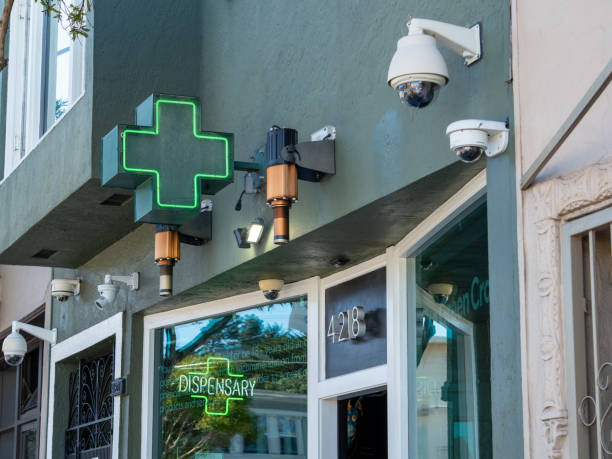

How to Grow Your Dispensary's Online Presence with Social Media Marketing
Posted by on 2024-06-10
In today's digital age, having a strong online presence is crucial for any business, including dispensaries. With the increasing popularity and acceptance of cannabis products, it is more important than ever to stand out from the competition and attract new customers. One of the most effective ways to do this is through social media marketing.
Social media platforms such as Facebook, Instagram, Twitter, and LinkedIn offer a unique opportunity to connect with potential customers and build relationships with your audience. By creating engaging content that showcases your products, services, and brand personality, you can increase brand awareness and drive traffic to your website or storefront.
One of the key benefits of social media marketing is its ability to reach a wide audience at a relatively low cost. With targeted advertising options available on most platforms, you can tailor your messaging to specific demographics based on factors such as age, location, interests, and more. This allows you to reach potential customers who are likely to be interested in your products or services.
Another advantage of social media marketing is its ability to facilitate two-way communication with your audience. By responding to comments, messages, and reviews in a timely manner, you can show that you value customer feedback and are committed to providing excellent service. This can help build trust with your audience and encourage repeat business.
In order to effectively grow your dispensary's online presence with social media marketing, it is important to develop a strategic plan that aligns with your business goals. Start by identifying your target audience and determining which platforms they are most active on. Then create a content calendar that includes a mix of promotional posts, educational content about cannabis products, behind-the-scenes glimpses of your dispensary operations, customer testimonials, and more.
Consistency is key when it comes to social media marketing. Make sure to post regularly and engage with your audience consistently in order to keep them interested and coming back for more. Track key metrics such as engagement rates, click-through rates, website traffic referrals from social media platforms, and sales conversions in order to measure the effectiveness of your efforts.
Overall, social media marketing can be a powerful tool for growing your dispensary's online presence and attracting new customers. By creating compelling content that resonates with your target audience and engaging with them authentically on social media platforms, you can increase brand awareness, drive traffic to your dispensary website or storefront,and ultimately boost sales revenue.